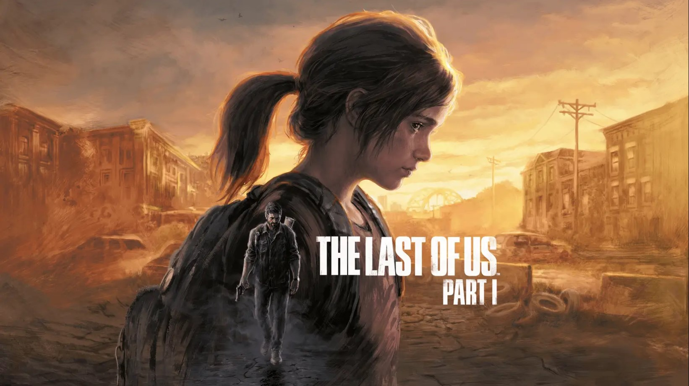

The Last of Us Part I
CLP $42.990
CLP $42.990
Ganadora de más de 500 premios del Juego del año, la serie The Last of Us es aclamada por la crítica debido a su narrativa emocionante, a sus personajes inolvidables y a su jugabilidad cargada de suspenso, acción y aventura.
Décadas después de que la infección del cordyceps destrozara los Estados Unidos, las facciones implacables y los infectados se presentan como una amenaza constante para los sobrevivientes. Joel, un duro contrabandista, tiene la tarea de escoltar a la adolescente Ellie a un lugar seguro. A pesar de cargar con traumas del pasado, el violento viaje a lo largo del país le da a Joel "algo por lo que luchar".
5 años más tarde, Joel y Ellie se asientan en Jackson, Wyoming. Después de que un horrible accidente sacudiera a la comunidad, Ellie emprende un viaje incansable en busca de justicia y de un cierre. Los peligros que enfrenta no serán sus únicos obstáculos; también debe lidiar con las repercusiones de sus actos.
Juega The Last of Us Part I, ahora disponible en PlayStation 5 y PC. Continúa tu viaje con The Last of Us Part II, disponible en PS4 y compatible con versiones anteriores en PS5.